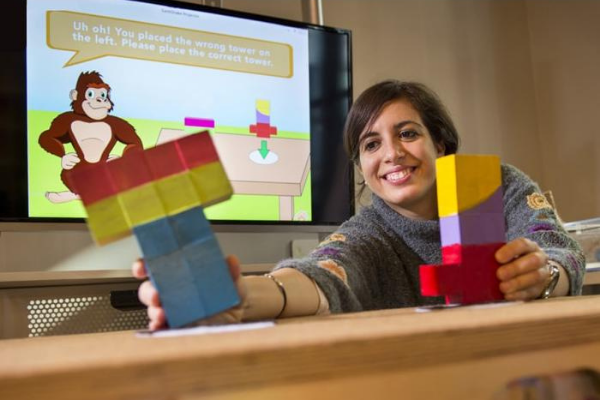
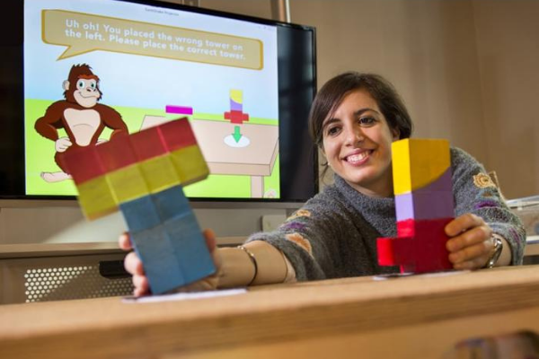

NoRILLA
Dr. Nesra Yannier
USA
Ages 3+
NoRILLA is part of our recent Step Up To Science exhibit renovation. The renovation’s first of three phases focus on the cause and effect relationships between force and motion. As kids take on different building challenges, test their creations, and rebuild based on their observations and on-screen feedback they explore a myriad of these relationships. Ultimately this play improves learning without sacrificing fun!
 

Artist Bio:
Nesra Yannier is a Senior Systems Scientist in the Human-Computer Interaction Institute at Carnegie Mellon University. Her background spans multiple disciplines, with undergraduate degrees in Physics and Computer Engineering, M.S. in Computational Sciences & Engineering, M.A. in Learning, Design & Technology, and a Ph.D. in Human-Computer Interaction. She is passionate about creating innovative educational technologies and learning experiences at the intersection of physical and virtual worlds to improve children’s learning and engagement. She has received a Mister Rogers Scholarship (Emmy’s College Television Awards) and Innovation Fellowship from Swartz Center for Entrepreneurship to take her PhD research forward to benefit society. Her work has been supported by the National Science Foundation as well as other foundations such as PNC Grow Up Great, EQT Foundation, Grable Foundation and Sprout Foundation. Her educational technologies (Intelligent Science Stations shown to improve learning by 5 times compared to other screen-based technologies) are being used in many museums, science centers, schools and after school programs reaching millions of children and families in the US and Europe.